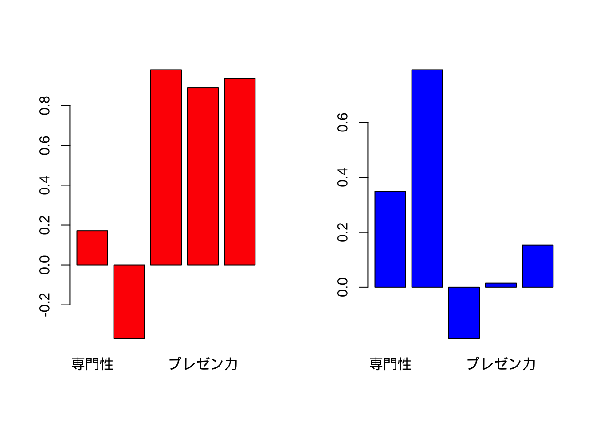
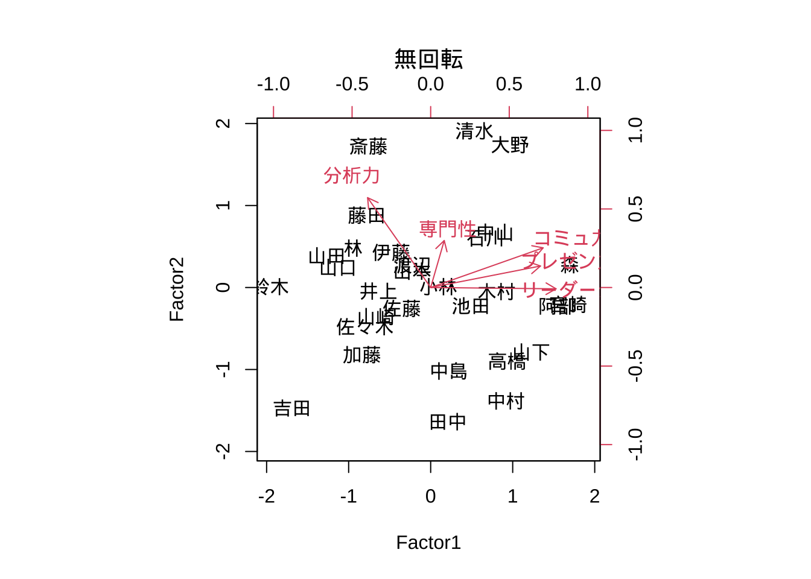
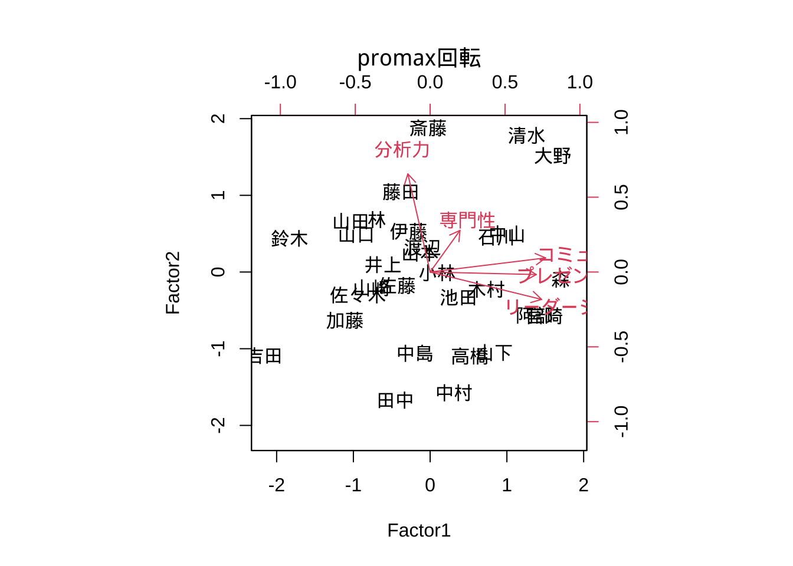
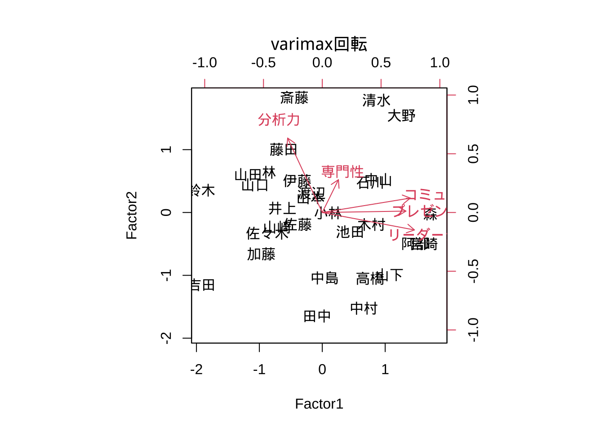
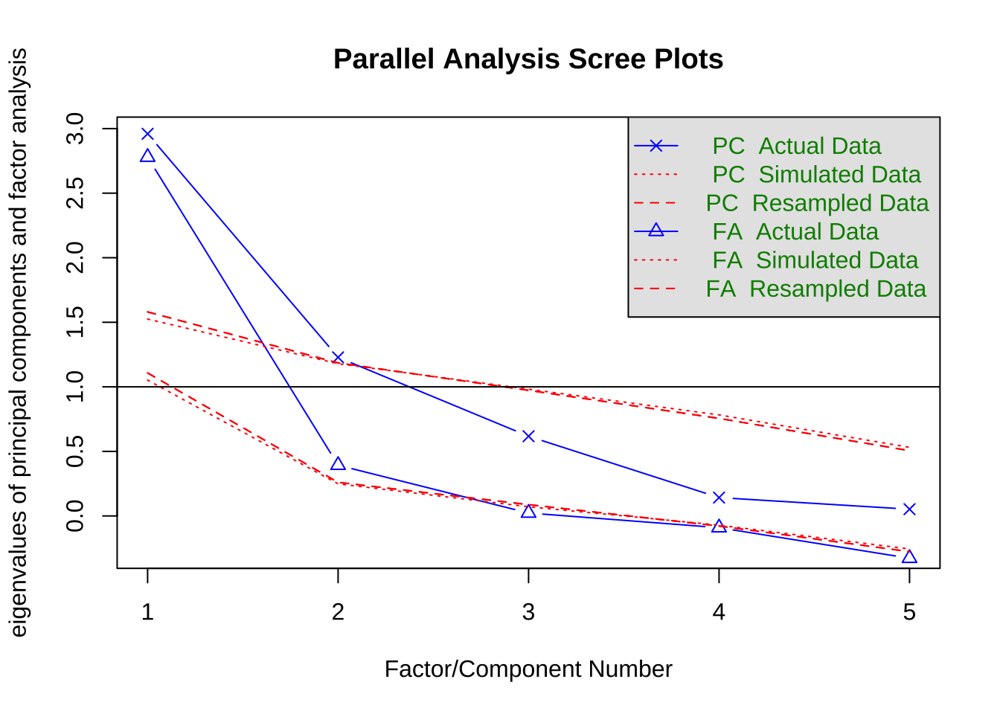
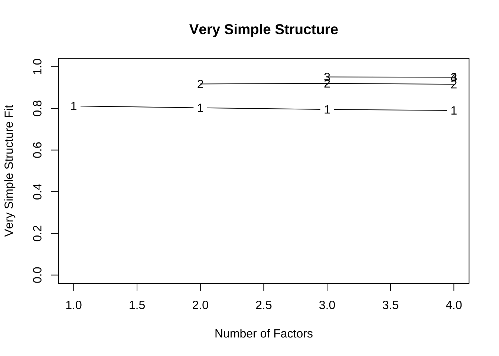
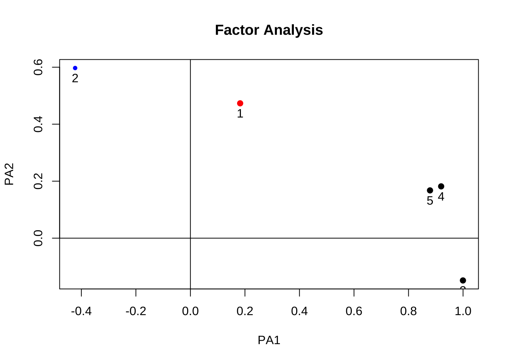
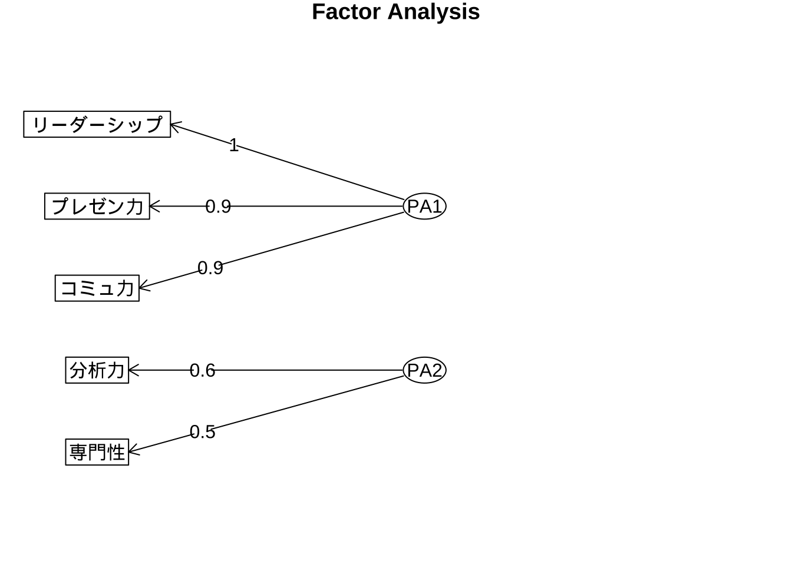
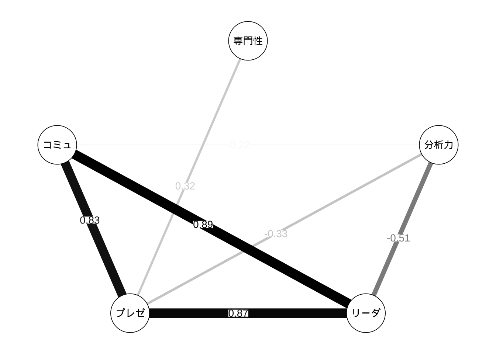

12 探索的因子分析
12.1 基本操作
データセット1: 従業員評価データ (仮想)
ここでは, 上のPCAで使用した”testdat3_jap.csv”の拡大版を使用する. (文字化けする場合には, 英語版”testdat_eng.csv”を使用しても良い.)
"testdat_30_jap.csv" (日本語版/英語版)
- 氏名/Name
- 専門性/Expertise (0-100)
- 分析力/Analytics (同)
- リーダーシップ/Leadership (同)
- プレゼン力/Presentation (同)
- コミュ力/Communication (同)
- n = 30, p = 5Rで標準的に用意されている関数factanal()を使用する.
# (1) factanal: 最尤法only
tokuten <- read.csv("testdat_30_jap.csv", header = T,
row.names = 1, skip = 1)
# tokuten <- read.csv("testdat_30_eng.csv", header = T, row.names = 1, skip = 1)
# tokuten <- read.csv("testdat_jap.csv", header = T, row.names = 1, skip = 1)
tokuten_fac <- factanal(tokuten, factors = 2) # default varimax回転
tokuten_fac
tokuten_fac$loading
# 確認(各因子のloadingsベクトルの2乗和--> SS loadings))
sum(tokuten_fac$loading[, 1]^2)
#>
#> Call:
#> factanal(x = tokuten, factors = 2)
#>
#> Uniquenesses:
#> 専門性 分析力 リーダーシップ プレゼン力 コミュ力
#> 0.849 0.238 0.005 0.208 0.100
#>
#> Loadings:
#> Factor1 Factor2
#> 専門性 0.172 0.349
#> 分析力 -0.368 0.792
#> リーダーシップ 0.980 -0.186
#> プレゼン力 0.890
#> コミュ力 0.936 0.153
#>
#> Factor1 Factor2
#> SS loadings 2.794 0.807
#> Proportion Var 0.559 0.161
#> Cumulative Var 0.559 0.720
#>
#> Test of the hypothesis that 2 factors are sufficient.
#> The chi square statistic is 4.44 on 1 degree of freedom.
#> The p-value is 0.0351
#>
#> Loadings:
#> Factor1 Factor2
#> 専門性 0.172 0.349
#> 分析力 -0.368 0.792
#> リーダーシップ 0.980 -0.186
#> プレゼン力 0.890
#> コミュ力 0.936 0.153
#>
#> Factor1 Factor2
#> SS loadings 2.794 0.807
#> Proportion Var 0.559 0.161
#> Cumulative Var 0.559 0.720
#> [1] 2.794063# 因子負荷量barplot(factor loadings)
par(mfrow = c(1, 2))
barplot(tokuten_fac$loading[, 1], col = "red")
barplot(tokuten_fac$loading[, 2], col = "blue")
Tips: プロット時, 日本語が文字化けする場合の対応 (特に, macユーザー):
> par(family = "HiraKakuProN-W3")
または,
> par(family = "HG明朝E")# 因子（負荷量）行列の回転
# scores = "regression" ==> Thomson's score返す （デフォルト, 戻り値無)
tokuten_fac2 <- factanal(tokuten, factors = 2,
rotation = "none",
scores = "regression") # 回転なし
tokuten_fac3 <- factanal(tokuten, factors = 2,
rotation = "promax",
scores = "regression") # promax回転（斜交回転)
tokuten_fac4 <- factanal(tokuten, factors = 2,
scores = "regression") # varimax回転（直交回転)# 因子得点(factor scores)
tokuten_fac2$scores
#> Factor1 Factor2
#> 山田 -1.26800407 0.38570292
#> 鈴木 -1.95989876 0.01060196
#> 田中 0.20645006 -1.63631682
#> 中村 0.91696834 -1.38312209
#> 大野 0.96895473 1.74205043
#> 小林 0.09169331 0.01065859
#> 伊藤 -0.48179366 0.42756367
#> 高橋 0.93201465 -0.89712752
#> 渡辺 -0.22275387 0.27605947
#> 佐藤 -0.35296159 -0.25515430
#> 山下 1.22524580 -0.78746751
#> 木村 0.80403959 -0.04966399
#> 山本 -0.22649622 0.19899511
#> 宮崎 1.67523625 -0.20442665
#> 山口 -1.12973504 0.24392701
#> 阿部 1.54630529 -0.22549756
#> 斎藤 -0.75968450 1.72490202
#> 吉田 -1.68984987 -1.46995307
#> 佐々木 -0.80152021 -0.47761662
#> 石川 0.66965259 0.60177580
#> 山崎 -0.66802546 -0.35549465
#> 中山 0.78533445 0.67322981
#> 藤田 -0.77928205 0.88172247
#> 加藤 -0.83886445 -0.82003132
#> 清水 0.53238028 1.91115337
#> 池田 0.49224657 -0.22365300
#> 井上 -0.63623615 -0.04435814
#> 林 -0.94437205 0.48040513
#> 中島 0.21941624 -1.01764392
#> 森 1.69353978 0.27877943
tokuten_fac3$scores
#> Factor1 Factor2
#> 山田 -1.03462508 0.66053651
#> 鈴木 -1.83144475 0.43930549
#> 田中 -0.45570109 -1.67056983
#> 中村 0.31020607 -1.57450638
#> 大野 1.59853100 1.51845067
#> 小林 0.09010822 -0.00947258
#> 伊藤 -0.28165229 0.53011595
#> 高橋 0.51707362 -1.09504471
#> 渡辺 -0.09913025 0.32295107
#> 佐藤 -0.43179522 -0.17623394
#> 山下 0.83521312 -1.05026730
#> 木村 0.73336738 -0.22523546
#> 山本 -0.13320378 0.24721940
#> 宮崎 1.48794583 -0.56956087
#> 山口 -0.96135865 0.48945650
#> 阿部 1.35883050 -0.56228456
#> 斎藤 -0.02732251 1.87959737
#> 吉田 -2.16579425 -1.09045510
#> 佐々木 -0.94015940 -0.29907982
#> 石川 0.86590070 0.45126013
#> 山崎 -0.76668658 -0.20697743
#> 中山 1.00259189 0.49692945
#> 藤田 -0.38013416 1.04632852
#> 加藤 -1.11095876 -0.63104097
#> 清水 1.25670992 1.78193683
#> 池田 0.37232594 -0.32985202
#> 井上 -0.61349683 0.09512940
#> 林 -0.69394517 0.68380497
#> 中島 -0.19815346 -1.05885961
#> 森 1.69675803 -0.09358169
tokuten_fac4$scores
#> Factor1 Factor2
#> 山田 -1.18038461 0.602738127
#> 鈴木 -1.92747306 0.355194538
#> 田中 -0.08460701 -1.647117489
#> 中村 0.65937060 -1.522855235
#> 大野 1.26028286 1.544441669
#> 小林 0.09213844 -0.005637015
#> 伊藤 -0.39907004 0.505647037
#> 高橋 0.75967163 -1.047085528
#> 渡辺 -0.17071995 0.310938604
#> 佐藤 -0.39234102 -0.189087623
#> 山下 1.06762028 -0.990716564
#> 木村 0.78276599 -0.190324936
#> 山本 -0.18796003 0.235734215
#> 宮崎 1.61315438 -0.495923070
#> 山口 -1.06921083 0.438850587
#> 阿部 1.48252735 -0.493985703
#> 斎藤 -0.44441816 1.831638615
#> 吉田 -1.92207351 -1.149777378
#> 佐々木 -0.87303770 -0.329176947
#> 石川 0.76506664 0.474596410
#> 山崎 -0.72014255 -0.232441752
#> 中山 0.89151385 0.524587102
#> 藤田 -0.61203044 1.005054108
#> 加藤 -0.97003241 -0.659683285
#> 清水 0.86026215 1.787703833
#> 池田 0.44522905 -0.306754687
#> 井上 -0.63411816 0.068251272
#> 林 -0.84514031 0.639034836
#> 中島 0.03698524 -1.040372398
#> 森 1.71617133 -0.023471343# 因子負荷量(factor loadings)
tokuten_fac2$loading
#>
#> Loadings:
#> Factor1 Factor2
#> 専門性 0.108 0.374
#> 分析力 -0.502 0.715
#> リーダーシップ 0.997
#> プレゼン力 0.873 0.171
#> コミュ力 0.895 0.316
#>
#> Factor1 Factor2
#> SS loadings 2.821 0.780
#> Proportion Var 0.564 0.156
#> Cumulative Var 0.564 0.720
tokuten_fac3$loading
#>
#> Loadings:
#> Factor1 Factor2
#> 専門性 0.249 0.348
#> 分析力 -0.186 0.820
#> リーダーシップ 0.930 -0.229
#> プレゼン力 0.886
#> コミュ力 0.963 0.118
#>
#> Factor1 Factor2
#> SS loadings 2.675 0.859
#> Proportion Var 0.535 0.172
#> Cumulative Var 0.535 0.707
tokuten_fac4$loading
#>
#> Loadings:
#> Factor1 Factor2
#> 専門性 0.172 0.349
#> 分析力 -0.368 0.792
#> リーダーシップ 0.980 -0.186
#> プレゼン力 0.890
#> コミュ力 0.936 0.153
#>
#> Factor1 Factor2
#> SS loadings 2.794 0.807
#> Proportion Var 0.559 0.161
#> Cumulative Var 0.559 0.720
# tokuten_fac$loading# 因子得点と因子負荷量のbiplot
# biplot(tokuten_fac2$scores, tokuten_fac2$loading)
# biplot(tokuten_fac3$scores, tokuten_fac3$loading)
# biplot(tokuten_fac4$scores, tokuten_fac4$loading)
biplot(tokuten_fac2$scores, tokuten_fac2$loading,
family = "HiraKakuProN-W3", main = "無回転") # 日本語文字化け対応 (mac)
biplot(tokuten_fac3$scores, tokuten_fac3$loading,
family = "HiraKakuProN-W3", main = "promax回転") # 日本語文字化け対応 (mac)
biplot(tokuten_fac4$scores, tokuten_fac4$loading,
family = "HiraKakuProN-W3", main = "varimax回転") # 日本語文字化け対応 (mac)
12.2 ライブラリpsychの利用
- 関数
psych()では, モデル推定方法や因子負荷行列の回転方法等に選択肢がある.
- モデル推定方法 (引数fm=): 最尤法 ("ml"), 一般化最小2乗法 ("gls"), 重み付き最小2乗法 ("gls"), 最小残差法 ("mires"). デフォルトは"mires"
- 回転方法 (引数rotate=): オブリミン ("oblimin"), バリマックス("varimax")など.library(psych)
# 主因子法
tokuten_fa <- fa(r = tokuten, nfactors = 2 ,
rotate = "none", fm = "pa", scores = T) # 回転なし
tokuten_fa2 <- fa(r = tokuten, nfactors = 2 ,
rotate = "oblimin", fm = "pa", scores = T) #
# tokuten_fa <- fa(r = tokuten, nfactors = 2 , rotate = "none", fm = "ml", scores = T)
# デフォルト: rotate = "oblimin", fm = "minres"
# 最尤法, fm = "ml", 一般化最小2乗法, "gls", 重み付き最小2乗法"gls", 最小残差法"mires"
# PCAとの比較
# tokuten_fa # standardized loadings (pattern matrix)表示
summary(tokuten_fa)
tokuten_fa2$loadings
tokuten_fa$scores
par(mfrow = c(1, 2))
# plot(tokuten_fa)
# plot(tokuten_fa2)
biplot(tokuten_fa, main = "無回転")
biplot(tokuten_fa2, main = "oblimin回転")
par(mfrow = c(1, 1))
#>
#> Factor analysis with Call: fa(r = tokuten, nfactors = 2, rotate = "none", scores = T, fm = "pa")
#>
#> Test of the hypothesis that 2 factors are sufficient.
#> The degrees of freedom for the model is 1 and the objective function was 0.35
#> The number of observations was 30 with Chi Square = 8.79 with prob < 0.003
#>
#> The root mean square of the residuals (RMSA) is 0.04
#> The df corrected root mean square of the residuals is 0.12
#>
#> Tucker Lewis Index of factoring reliability = 0.163
#> RMSEA index = 0.508 and the 10 % confidence intervals are 0.245 0.856
#> BIC = 5.39
#> Loadings:
#> PA1 PA2
#> 専門性 0.355 0.470
#> 分析力 -0.184 0.660
#> リーダーシップ 0.911 -0.255
#> プレゼン力 0.958
#> コミュ力 0.914
#>
#> PA1 PA2
#> SS loadings 2.744 0.738
#> Proportion Var 0.549 0.148
#> Cumulative Var 0.549 0.696
#> PA1 PA2
#> 山田 -1.02034162 0.019100487
#> 鈴木 -1.81609325 0.890601637
#> 田中 0.11710274 -1.131035071
#> 中村 0.97786615 -1.497888977
#> 大野 1.18686813 1.448453889
#> 小林 0.14568067 0.518419196
#> 伊藤 -0.66256206 0.755510959
#> 高橋 0.82501884 -1.016144138
#> 渡辺 -0.37950698 -0.296849891
#> 佐藤 -0.35540858 0.222170566
#> 山下 1.38305140 -0.665023036
#> 木村 0.62270049 -0.476316678
#> 山本 -0.44361495 -0.426060496
#> 宮崎 1.64994564 -0.484538347
#> 山口 -0.76190378 -0.118039940
#> 阿部 1.56078515 0.162024351
#> 斎藤 -0.74336529 2.028239692
#> 吉田 -1.93942159 -0.937774682
#> 佐々木 -0.94328316 -0.363190871
#> 石川 0.73867734 0.571203066
#> 山崎 -0.93450472 -0.725912234
#> 中山 1.01147500 0.113093275
#> 藤田 -0.67086121 1.318200214
#> 加藤 -0.80985800 -1.173736127
#> 清水 0.62804134 1.271351417
#> 池田 0.76781783 -0.165605242
#> 井上 -0.64479954 0.598812374
#> 林 -0.96156230 0.407994217
#> 中島 -0.06969367 -0.843983587
#> 森 1.54175000 -0.00307602312.3 因子分析に有用なツール
ライブラリpsychの関数fa.parallel(), vss()は, 因子数の決定に有用である.
# library(psych)
# 平行分析(parallel analysis)
# デフォルト: fm = "minres"
(res_parallel <- fa.parallel(tokuten)) # minres法(デフォルト), PCA & 因子分析
# fa.parallel(tokuten, fm = "wls")
# fa.parallel(tokuten, fm = "ml", fa = "fa") # 最尤法+因子分析(のみ)実行
# サンプルデータから作られるscreeプロットと, シミュレーションデータの行列(サンプルと同じサイズ)のscreeプロットとを比較
# → 因子数をsuggest
# fa = "both" (デフォルト): # PCA, 主因子法の固有値を同時に表示
# VSS (Very Simple Structure) 規準
# Very Simple Structure criterion ( VSS) for estimating the optimal number of factors
# 最大となる因子数を探す
# (tokuten_vss <- vss(tokuten, n = 5, rotate = "oblimin", fm = "wls") ) # n: Number of factors to extract (> (初期仮説の)因子数)
# デフォルト: # 因子数 n = 8, 回転 rotate = "varimax"
# → VSS, MAP, その他の因子数決定基準の数値を表示
tmp_vss <- vss(tokuten, n = 4, fm = "ml")
# VSS.plot(tmp_vss)
print(tmp_vss)
#> Parallel analysis suggests that the number of factors = 2 and the number of components = 1
#> Call: fa.parallel(x = tokuten)
#> Parallel analysis suggests that the number of factors = 2 and the number of components = 1
#>
#> Eigen Values of
#> Original factors Resampled data Simulated data Original components
#> 1 2.78 1.07 1.05 2.96
#> 2 0.39 0.28 0.26 1.23
#> Resampled components Simulated components
#> 1 1.6 1.58
#> 2 1.2 1.17
#>
#> Very Simple Structure
#> Call: vss(x = tokuten, n = 4, fm = "ml")
#> VSS complexity 1 achieves a maximimum of 0.81 with 1 factors
#> VSS complexity 2 achieves a maximimum of 0.92 with 3 factors
#>
#> The Velicer MAP achieves a minimum of 0.15 with 1 factors
#> BIC achieves a minimum of 1.04 with 2 factors
#> Sample Size adjusted BIC achieves a minimum of 4.15 with 2 factors
#>
#> Statistics by number of factors
#> vss1 vss2 map dof chisq prob sqresid fit RMSEA BIC SABIC complex
#> 1 0.81 0.00 0.15 5 2.1e+01 0.00083 2.01 0.81 0.32 3.9 19.5 1.0
#> 2 0.80 0.92 0.27 1 4.4e+00 0.03506 0.88 0.92 0.34 1.0 4.2 1.2
#> 3 0.79 0.92 0.45 -2 0.0e+00 NA 0.52 0.95 NA NA NA 1.5
#> 4 0.79 0.92 1.00 -4 2.1e-14 NA 0.54 0.95 NA NA NA 1.5
#> eChisq SRMR eCRMS eBIC
#> 1 1.1e+01 1.4e-01 0.19 -5.7
#> 2 1.6e+00 5.2e-02 0.16 -1.8
#> 3 7.8e-17 3.6e-10 NA NA
#> 4 1.7e-14 5.3e-09 NA NAライブラリpsych内の関数fa.plot()やfa.diagram()は, 因子間の関係性 (相関構造や階層構造) を調べるのに有用である.


また, ライブラリqgraphの関数qgraph()も同様な目的で有用である.
# 相関ネットワーク(参考)
library(qgraph)
qgraph(cor(tokuten), edge.labels = T, minimum = .2, edge.color = "black")